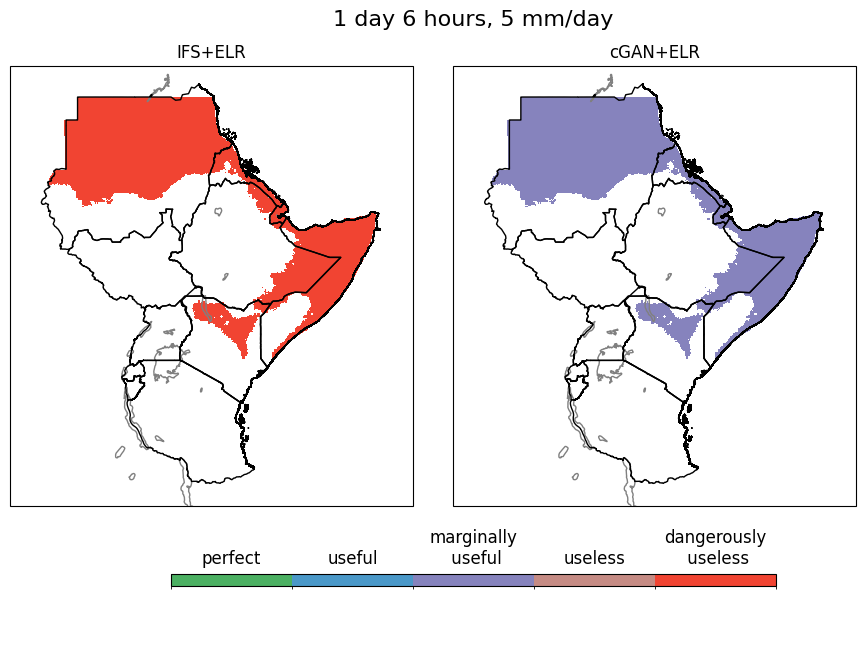

CRPS comparisony | Categories of reliability | Cost-loss ratios
Categories of reliability calculated for Ensemble Logistic Regression (ELR) fine-tuning of IFS and cGAN to predict probabilities of exceedances across different rainfall thresholds (in mm/day) and lead times (in days). Categories of reliability are calculated using test years 2021, 2023 and 2024 following the methodology detailed in Weisheimer and Palmer (2014).
Accordingly, categories are assigned based on the reliability diagram slope values and their uncertainties obtained from 1000 bootstrap resamples of the test period data. A slope value close to 1 indicates that predicted probabilities perfectly match observed frequencies and are assigned the category "perfect", whereas slope values less than 1 but greater than 0.5 are assigned the category "still useful". Slope values approaching 0.5 indicate no added skill beyond climatology and are therefore assigned the category "marginally useful". Slope values equal to zero are "not useful" and negative slope values are "dangerous" (i.e. forecast probabilities are anti-correlated with observed frequencies).
Blank spaces are where no values were computed.
Region: Threshold: mm/day. Lead time: hours.
